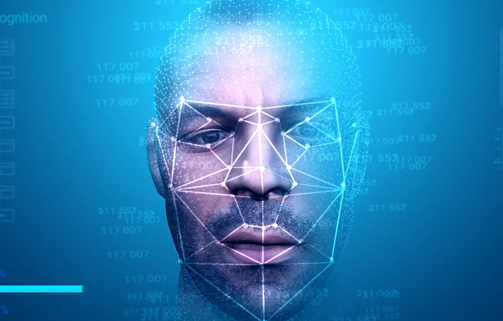

Face Liveness Detection
Cutting‑edge anti‑spoofing technology powered by YOLOv8 — designed to distinguish live faces from photos, videos, and 3D masks in real time.
Introduction
Welcome to the Anti-Spoofing / Liveness Detector for Face Recognition Systems. We believe in the power of technology to enhance security and redefine the capabilities of facial recognition.
As the digital landscape evolves, so do the sophistication of spoofing attacks. Our system stays ahead of the curve, providing solutions that bolster face recognition systems against photograph, video replay, and 3D mask attacks.

Purpose
The purpose of this system is to empower individuals and organizations with tools needed to safeguard the integrity of facial recognition. We recognize that the effectiveness of facial recognition technology depends on its ability to accurately distinguish between real and manipulated facial data.
Through this platform, explore the capabilities of our detection system and gain insights into the ever-evolving landscape of facial recognition security — whether you are a security professional, developer, or curious learner.